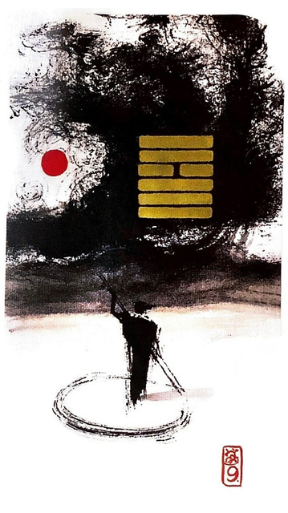

풍천소축
소길 2
유순한 것이 강한 것을 누르니 일이 실패 하지 않지만
만족할 만한 결과는 기대할 수 없다한 남자가 나룻배를 노를 저어 조금씩 천천히전진하는 상황을 표현한 그림묵묵히 제 갈길 간다시간이 걸려도 원하는 목표 성취
적게 쌓는다.적게 모은다.적게 얻음.작은 이익.적은 힘을 들임.자제함. 자급자족.스스로 얻음.신중한 준비.사소한 장애물.성실한 노력.신중.답답하고 느리다.
연애운
무난한 연애
사업운
현상태 유지.작은 이익 큰 탈 없이 성실히 맡은 임무해냄
속마음
썸호감은 있으나 천천히 알아가보고 싶은 마음
1년 이상꾸준히 한결같은 마음
이별 후재회할 마음은 있으나 아직 더 생각해보고 싶은 마음
솔로연애운
더 기다려야 함
건강운
뇌.신경계.우울증